Basic Static and Dynamic Analysis PART 1
Context: I am reading this book Malware Analysis Techniques: Tricks for the Triage of Adversarial Software and reading books take time and it's a tedious task but rewarding. So, I just thought to write this blog basically covering the the topics in the book in less time consuming way plus rewarding. Reading Book about malware's so you do not have to.
Introduction
Malware analysis is divided into two primary techniques: dynamic and static. In dynamic we execute the malware and observe the system while in static we try to obtain every information about the malware without acually running it.
Basic Static Analysis
If i have to use a analogy, to exaplin what is static analysis it's like shaking gift box to and try to guess what might be in it, static analysis allows us to gain information which later provide context for behaviours we see in dynamic analysis, also information which can be used agaisnt malware.
Hashing
Hashing is a useful techniques that helps us in many ways. From developers to using through hash tables or us analyst to generate a unique checksum. A hashing algorithm is a one-way function that generates a unique checksum for every file, much like a fingerprint of the file.
I will not go much deeper how hashing works but the best algo's are one where we have less collision(occurrence where two different files have identical hashes) and less computational demand. Example:- SHA256
Obtaining file hashes is simple we can use built in commands in Windows powershell Get-FileHash is a command that get the hash of a provided file.
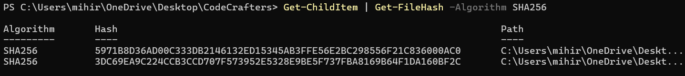
Leveraging VirusTotal
VirusTotal is widely used used tool by analysts. VirusTotal is a scanning engine that scans the possible malware samples against several antivirus (AV) engines and reports their findings.
What we do is after getting the hash we enter it into VirusTotal and quickly detect the malwares.
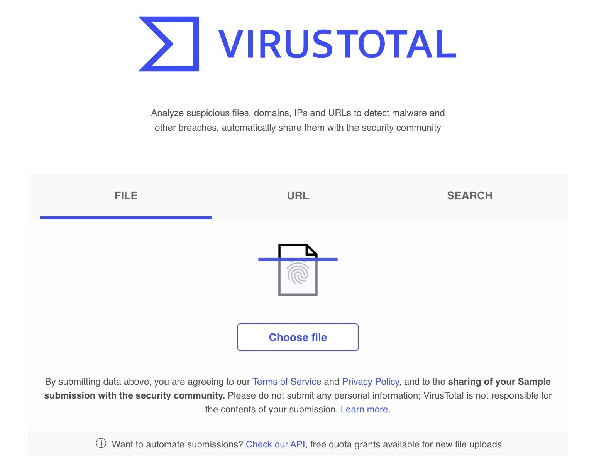
It should be apparent that utilizing our hashes first to search VirusTotal may greatly assist in reducing triage time and confirm suspected attribution much more quickly than our own analysis may.
But this does not work always. Let's take a example of 8888888.png(A sample of Qakbot)
if we take a hash of the 8888888.png and put into the VirusTotal. We get the following results.
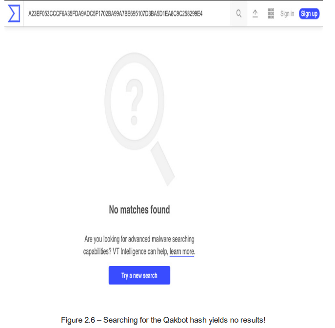
It appears that the malware has a unique hash but this is where static cryptographic hashing algo's fails. This is a common technique known as Hashbusting which ensure that the each malware sample has a different static hash.
Fuzzy hashing
We can say fuzzy hashing is the nemesis of the hashbusting. It's a technique that helps determine if two files are similar, even if they are not exactly same. Here, we break the into parts and genrates smaller hashes for each part rather than creating one single fingerprint for file. This way, even if file is sightly modified fuzzy hashing can still show a high degree of similarity between the files.
ssdeep is a fuzzy hashing algorithm that utilizes a similarity digest in order to create and output representations of files in the following format:
chunksize:chunk:double_chunk
Now, let's see the ssdeep hash of out 8888888.png sample But one last thing ssdeep is not installed by default so, we to install it.
With PowerShell we can now utilize the
following to obtain our ssdeep hash: .\ssdeep.exe .\8888888.png. The following command will return the ssdeep fuzzy hash.
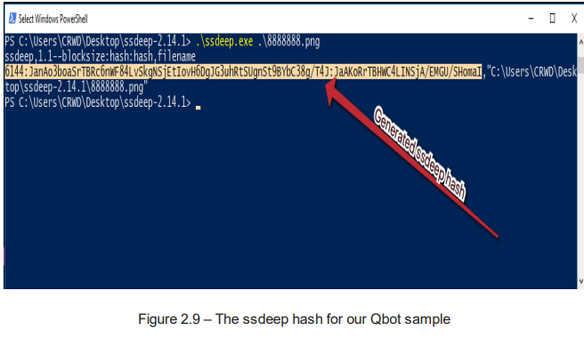
The only reliable publicly available search engine for ssdeep hashes is VirusTotal, which requires an Enterprise membership.
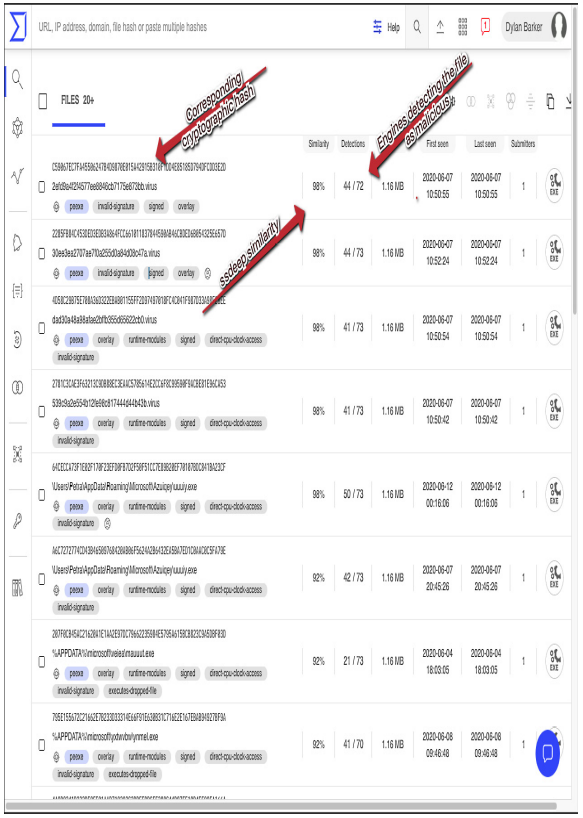
Clicking one of the highly similar cryptographic hashes will load the VirusTotal scan results for the sample and show what our sample likely is, as illustrated in the following screenshot:
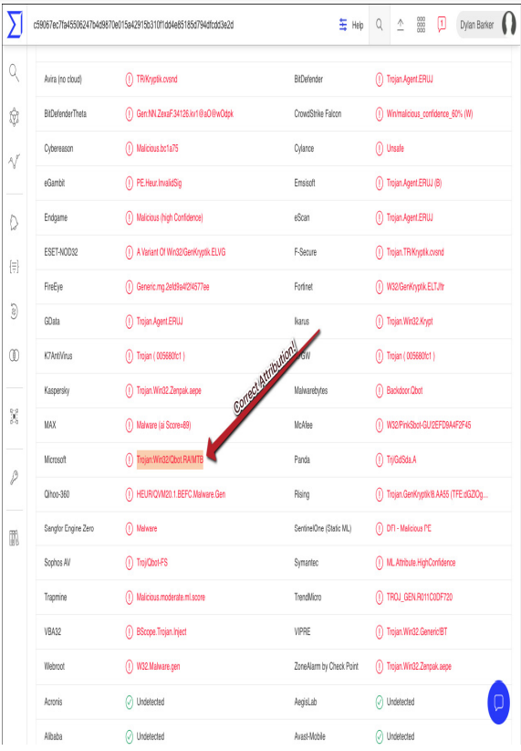
Malware serotyping
Threat Actors often change the extension of the files, even excluding it sometimes, such as notmalware.doc.exe in attempt to obfuscate their intensions, bypass EDR solutions, or utilize social engineering to make user into executing malware.
For example if we try to open 888888.png as png it appears crrupt.
Fortunately for us changing the extension does not hide it's true content. All the files have header with tells operating system how to interpret the file.
A list of common file headers related to malware:
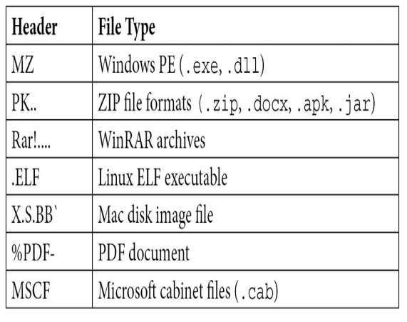
In Windows we do not have the a built-in utility for testing file types like we have in Unix or Unix-like systems called file but we can download secondary tools like filetype.exe.
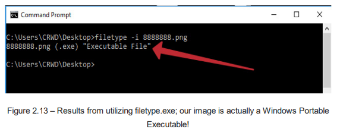
Collecting string
When an executable is complied, certain ASCII or Unicode-encoded strings used during development may be included in the binary.
This strings can provide valuable insight into what this file do upon execution, which command and control servers are being uitlized or who wrote it.
We are going to use a tool from Windows Sysinternals which can be utilized to extrat any string located within the binary tool is called strings.
By default both ASCII and Unicode strings are searched. The primary we have to take care is -n, the minimum string length to return. Let's examine which strings our Qbot sample contains, with strings -n 5
8888888.png > output.txt.
The result will be stored in the output.txt. When we look at the results we can see several strings have been returned including some from Windows API modules that are imported by binary.
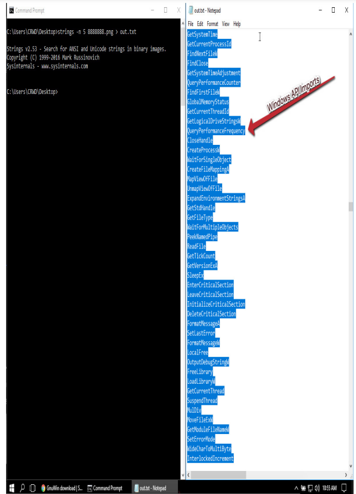
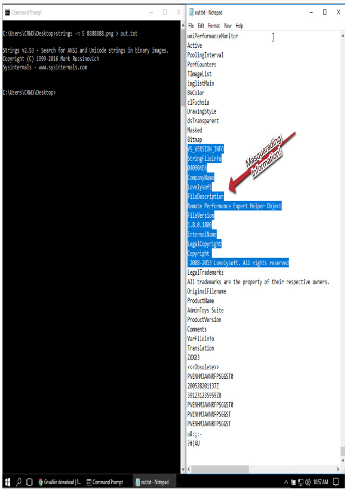
This information that we have gained through this methodology can come in handy in both tracking the operation of the campaign and tracking Indicators of compromise (IOCs) for internal outbreaks.
Basic Dynamic Analysis
Now, that we have covered the static analysis it's time to study malware while executing it. From watching behavior that the software exhibits, as well as what techniques the adversary is utilizing to achieve their goals it will help us to build better defense mechanisms to prevent further incidents.
Basic dynamic Analysis techniques and tooling allows us to what the malware do on infected machine as well as network and what are author's goal.
Monitoring for processes
Malware that we initially encounter - a binary or a scripted dropper is often just the first part of multi stage attack. Malware often create additional proccesses or executables. Malware aslo performs many task that are not visible to the user immediately unless you are looking for it. The First tool we will examine is ProcWatch.
ProcWatch will monitor for new processes as they execute on the system, and will inform us of their command-line arguments, as well as user that run them futhermore start and end time of the processes.
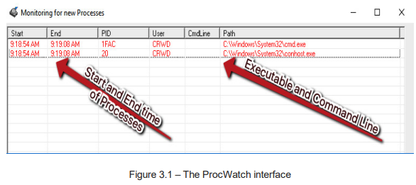
Let's look at a example: we will take an Emotet malicious document
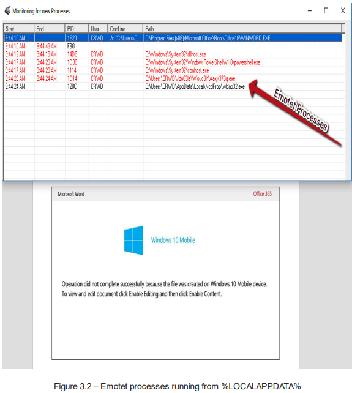
After locating the binary file we take the SHA256 of the binary using HashMyFiles and put that hash in VirusTotal and we assess with confidence that threat is a Emotet.
Network IOC collectoin
We should also monitor for the outbound network connections via WireShark, which can reveal some valuable information.
Once we capture the traffic. We can start parsing for suspicious traffic a good place is often HTTP traffic as threat actor try bypass firewall by blending in existing and benign traffic.
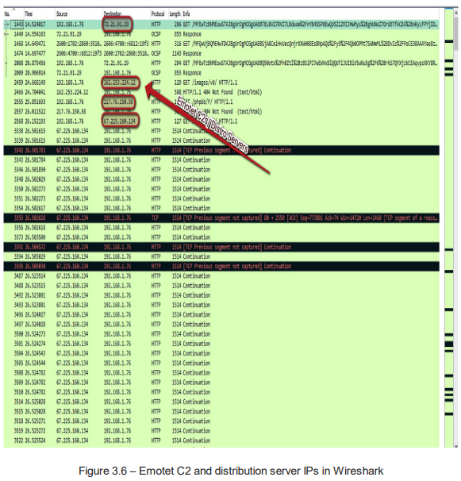
Now, either we can block outbound connections or we can reverse DNS to obtain the associated doamins and block those in case of they are multihomed.
Multihoming refers to having a singular domain point to several IP
addresses
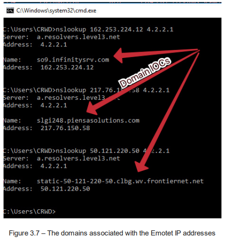
Enumeration by the enemy
Sometimes not often an infection will be accompanied by active enumeration and interactivity.
Differnt threat actors have different ways but purpose is same to gain more foothold in network, discover more hosts, more vulnerabilities.
Domain Checks
Threat actors check if the host is worth their time at all. The binary will issue commands such as net user /domain to se what domain if any exists. If this check fails they will halt the execution of the malware.
System enumeration
Attacker uses Task manager to dump the local security authority subsystem process – LSASS.exe – and obtain administrative credentials in the form of an NTLM hash.
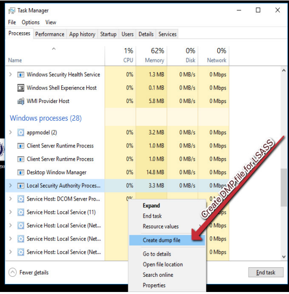
Additional way is to obtain credentials via the refistry via commands.
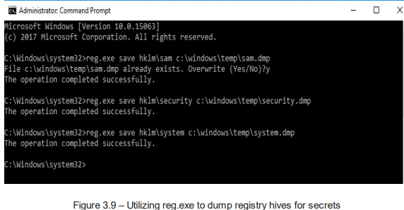
If an attacker be lucky enough to compromise a domain controller quickly, the NTDS.dit file will be the first target, as this stores all the credentials for every user in the domain.
Attackers also perform recursive searches on the system for keywords such as password with built-in tools such as find and also use tools such as systeminfo to obtain patch level of the system.
Network enumeration
Once threat actor have obtained credentials that may facilitate lateral movement. Often they use a secondary (often legitimate) tool being written to the system, such as Advanced IP Scanner, or a similar tool that allows for quick and accurate enumeration of the other hosts on the network.
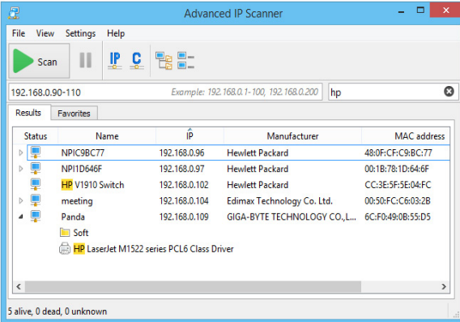
The key indicators here will likely be massive amounts of TCP SYN traffic
originating from a single host, additional traffic to lookout for is:
- TCP 3389 - RDP
- TCP 5985/5986 - HTTP for WinRM
- TCP 445 - SMB
- TCP 135 and 49152-65535 - WMIC
Case Study
Dharma, ransomware has been quite popular among low-skilled threat actors. This malware is used as MaaS
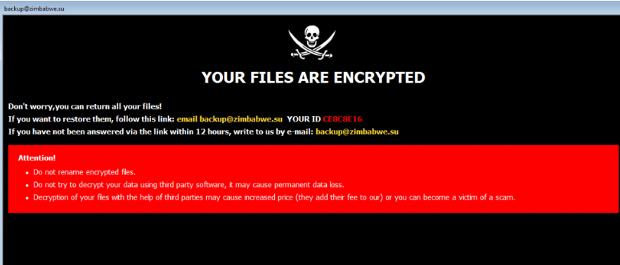
In most of the dharma cases, the initial vector has been to brute force weak RDP credentials via a tool called NLBrute. In this cases a large number of passwords and usernames are tried until a successful RDP session is created.
Once the session is created threat actor often use Advanced IP Scanner to find next host they could target on the network and dump passwords from the system or attempt to use the cracked RDP password to authenticate elsewhere.
Once the list of internal host list is created, it would be exported. The threat actor then decide choose one of these two methdeologies :- Futher RDP sessoins to spread the ransomware or it would be pused via WMIC, and downloaded via PowerShell from a staging server, the nexecuted using perviously stolen credentials
The ransomware encrypts files using an AES 256 algorithm. The AES key is also encrypted with an RSA 1024 algorithm. This encrypted AES key is stored at the end of the encrypted file along with the filename.
The name of the encrypted files have the following pattern:
[Filename].id-{8 bytes ID}.[recovery_email].zimba
then create persistence mechanisms in the
start up folder(more on persistence in part 2 of this blog)
security measures one can take to prevent this:
- Dharma ransomware is usually installed by gaining access to Remote Desktop Services, it is important to ensure that those services are properly locked.
- Organizations should use a zero trust architecture to allow remote users to securely access these servers without exposing them to the entire internet.
- RDP credentials should be ong, unique, and random
- Changing the listening port(default RDP port TCP 3389) via Windows Registry can help organizations hide vulnerable connections.